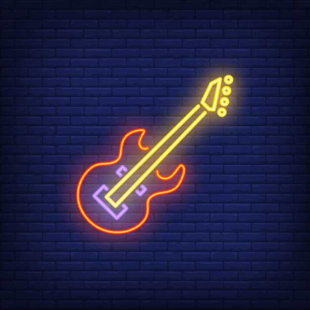
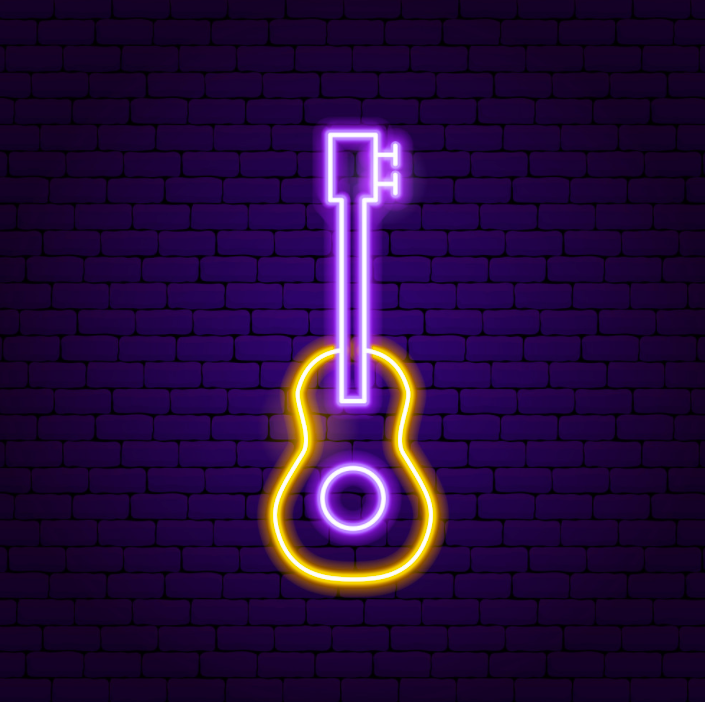

|

Heavy MetalHeavy metal is a loud, aggressive style of rock music. Heavy metal songs are loud and powerful-sounding, and have strong rhythms that are repeated. |
||
ClassicalClassical music is a very general term which normally refers to the standard music of countries in the western world. It is music that has been composed by musicians who are trained in the art of writing music (composing) and written down in music notation so that other musicians can play it. |

CountryCountry music is a style and genre of largely string-accompanied American popular music having roots in the folk music of the Southeast and cowboy music of the West, usually vocalized in simple form and harmony, and typified by melancholy ballads accompanied by acoustic instruments. |
|
|
|
|
To listen to different genres, click on the video below.Source: Youtube |
Explore the various genres here.Link: Every Noise at Once |